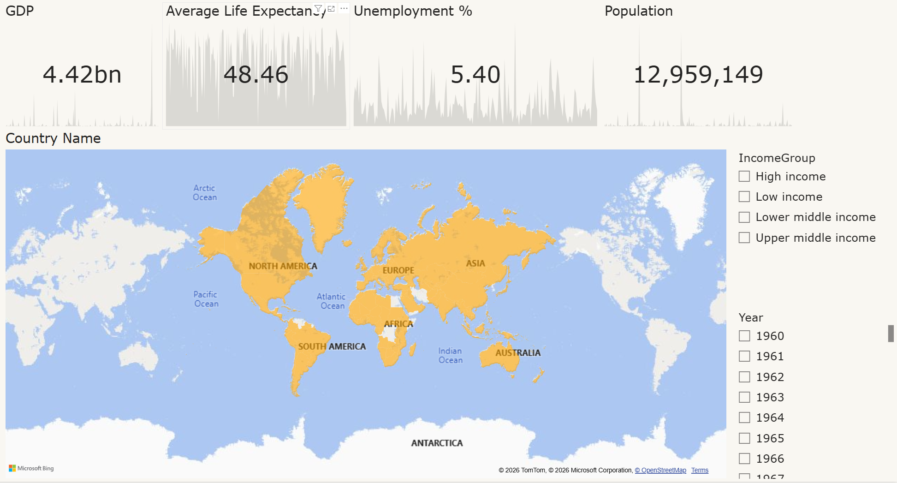
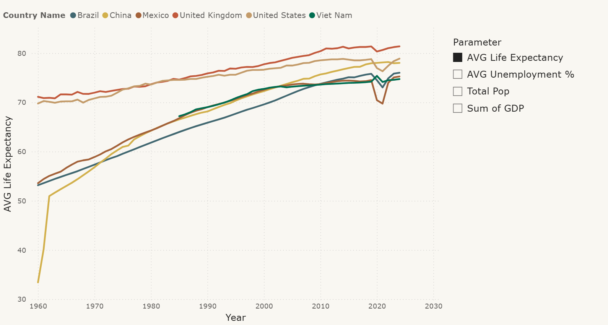
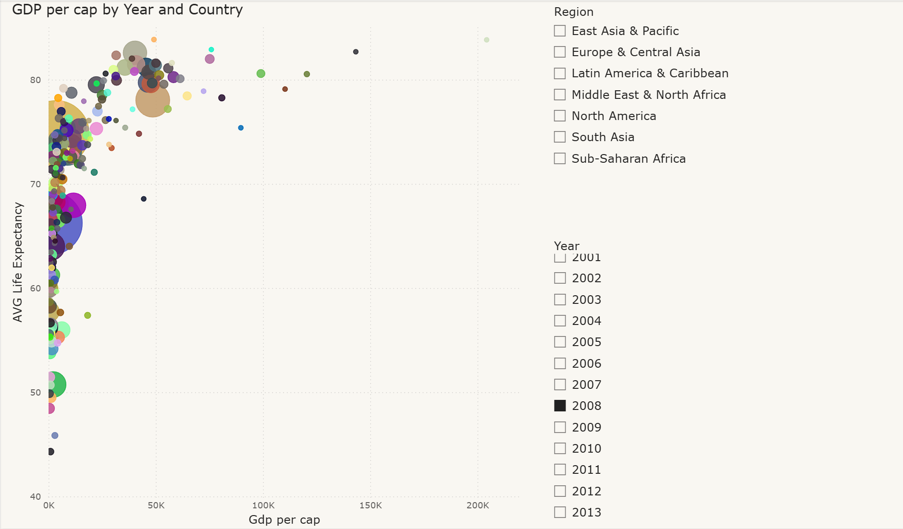

I turn raw transaction logs, dashboards, and query results into decisions someone can actually act on. Below are three field notes from recent work: a retail sales dataset, a global economic indicators dashboard, and a customer churn risk model.
Most of my time on any project goes into reconciling messy inputs — inconsistent categories, missing flags, mismatched price fields — before a single chart gets built. The three projects here each start from that same discipline: verify the data, segment it in a way that matches how a decision-maker actually thinks, then present only what changes the decision.
An Excel workbook cleaned and segmented from scratch, a Power BI dashboard built on global indicators, and a SQL-based churn risk model.
A raw point-of-sale export with inconsistent category labels, blank discount flags, and mismatched price-per-unit fields. I rebuilt the category and pricing columns from scratch (Cat_cleaned, PPU_cleaned), resolved a three-way discount flag into a clean boolean, and segmented every transaction into spending tiers so the sales team could see who their high-value customers actually are.
A three-page Power BI report built on a country-level GDP model with a supporting date table, so every KPI can be sliced by year. The overview page gives a country lead a single filled map and four headline indicators with trendlines; the deeper pages exist for the follow-up questions those numbers always trigger.



Contract type and tenure alone are decent churn predictors on their own, but they miss customers who look safe on one dimension and risky on another. I combined both into a single weighted risk score, then checked whether payment method compounded the risk further — it did.